DETALLES DE PROYECTO
Tipo de proyecto: Proyecto personal.
Mis roles: Investigador - Entrevistador - Diseño UX - Diseño visual - Prototipos.
Duración: Septiembre 2022.
Herramientas: Figma.
HowDoI es un servicio multiplataforma hecho para proveer a jovenes en la escuela y recien graduados con tutoriales y asistencia en habilidades técnicas que pudieran requerir en sus vidas en adelante.
EL PROBLEMA
En un mundo competitivo, todos quieren resolver las situaciones que se les presente pero no tienen el conocimiento, las escuelas no lo enseñan a profundidad y tutorias privadas son costosas y toman mucho tiempo en un solo objectivo.
EL OBJETIVO
HowDoI es una plataforma de fácil acceso con cientos de tutoriales, trucos y asistencia en varias capacidades técnicas cualquier adolescente pudiera necesitar, provisto en lecciones paso a paso o cursos completos.
INVESTIGACIÓN
El objetivo de la investigación es encontrar las necesidades y experiencias de los usuarios con soluciones previas ajenas al proyecto, este proceso se repitió con las propuestas iniciales de la aplicación, mediante entrevistas no moderadas, se hicieron estos hallazgos:
- Información confiable: Los usuarios desean saber si la información que van a recibir al ingresar al sistema es certificada y proviene de fuentes respetables.
- Duración: Algunos usuarios cuentan con muy poco tiempo, durante su tiempo libre, en horas de almuerzo o fines de semana.
- Accesibilidad: La participación de usuarios con limitaciones físicas debe ser satisfecha con herramientas que faciliten su uso.
- Comunicación: Los urusarios quieren saber si hay formas de hablar con los profesores o sus posibles compañeros de estudio sobre temas de la clase o resolución de dudas.
Personas + Mapa de proceso
Los resultados de las entrevistas ayudaron a desarrollar dos Personas. Con ello, para entender mejor su situación, se creó un mapa del proceso que siguen los usuarios en una página para registrarse en un curso.

 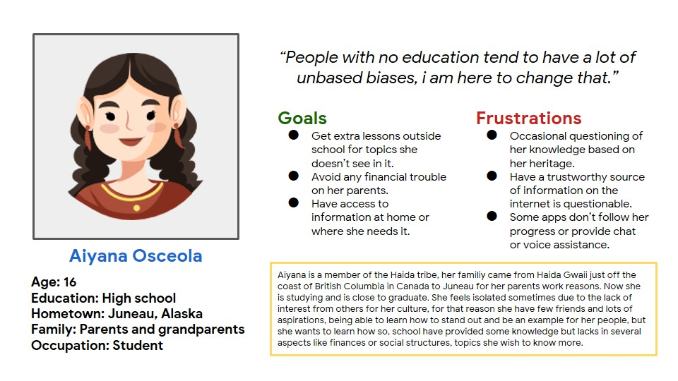
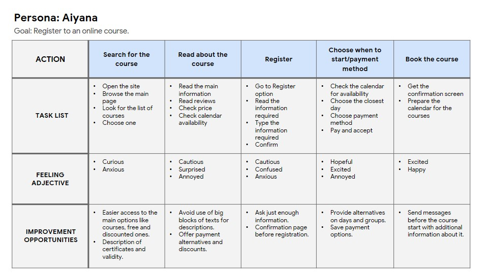
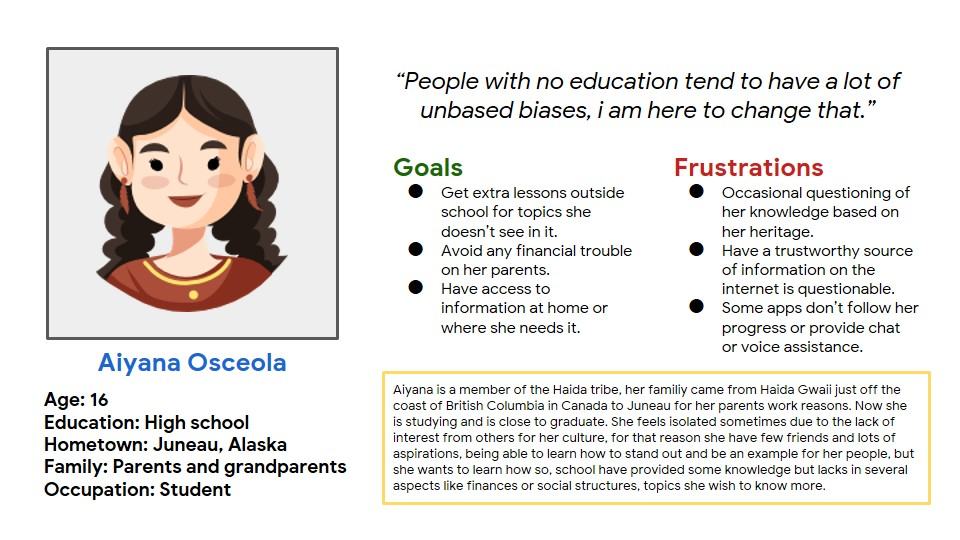
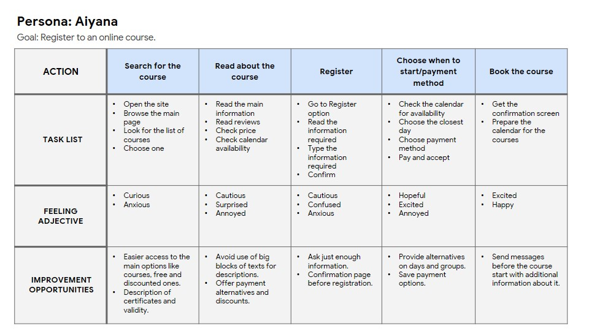

Definición e ideación
Después de hacer el trabajo de investigación y entrevistas, los resultados mostraron la necesidad de proveer educación de calidad gratuita por módulos y permitir a los usuarios apoyar a los desarrolladores a su modo:
- Para todos los usuarios el calendario de actividades debe ser implementado para que estudiantes y profesores puedan programar sus lecciones.
- Todos los usuarios quieren saber el progreso que tienen en sus clases, esto puede ser solucionado con ayudas como registro de clases, módulos completados, notificaciones y mensajería.
- Gran parte de los usuarios quieren saber si los certificados que otorga el sistema son válidos para sus carreras y esto es resuelto con acreditaciones y presentando la documentación que demuestra la validez de los estudios a nivel profesional.
Como el sistema puede mejorar las situaciones de:
DANIEL
- Ofrece clases gratuitas para él y otros.
- Puede aprender donde quiera.
- Aprende habilidades útiles para su elección de carrera futura.
AIYANA
- Recibe lecciones adicionales tan fácil como usar su movil.
- Evita cargas financieras en sus padres al recibir clases gratuitas.
- Tiene acceso a información donde quiera.
DESARROLLO: WIREFRAMES

DESARROLLO: SECUENCIA DE USO
 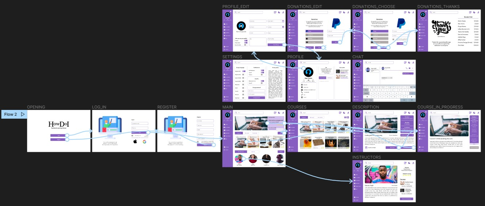
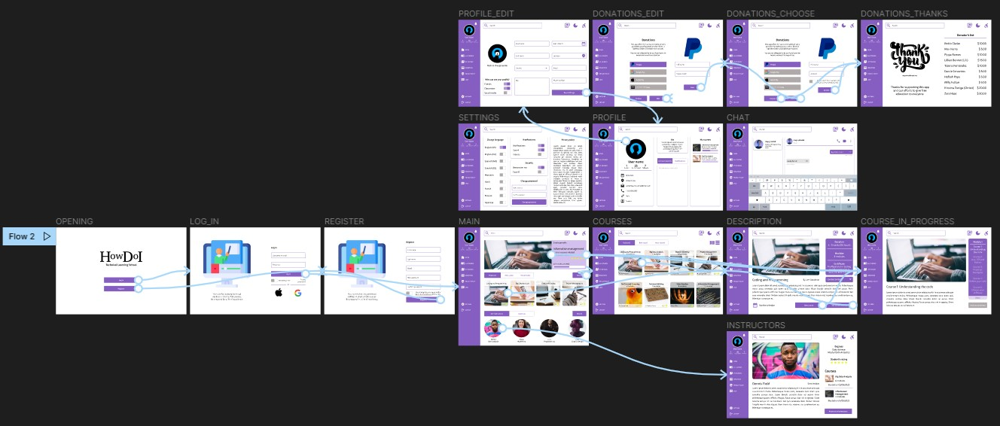

Capturas de pantalla directas de Figma que denotan el flujo de uso para los usuarios en sus distintas versiones.
DESARROLLO: PROPUESTAS FINALES
Versión para móviles
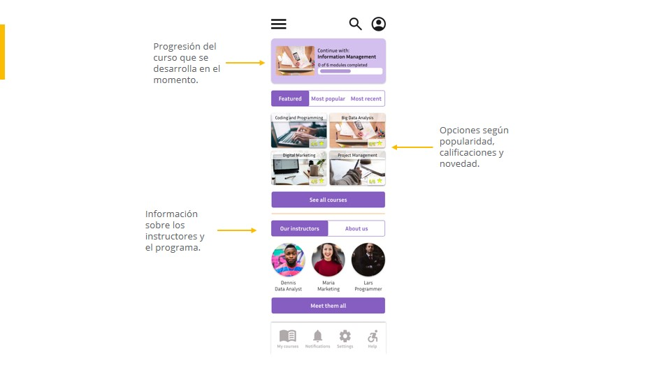

Versión para tabletas
 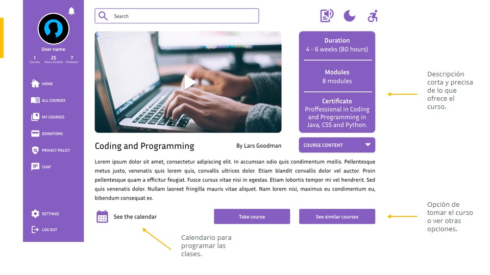
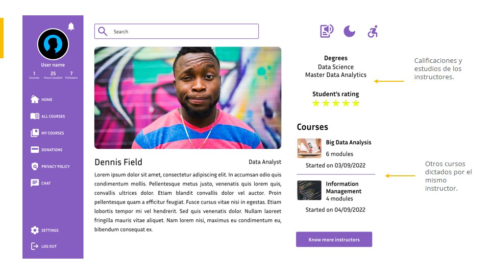
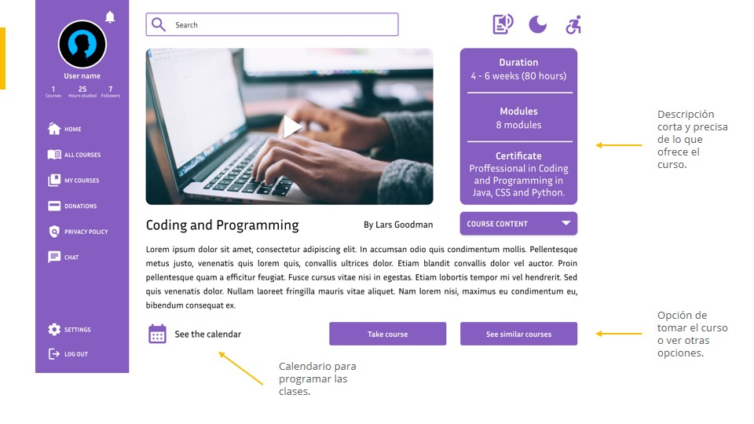
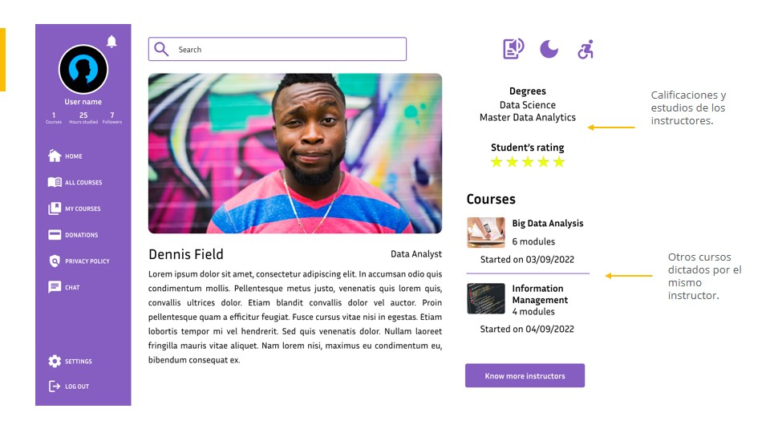
Versión para escritorio
 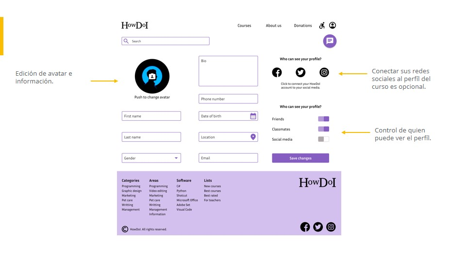
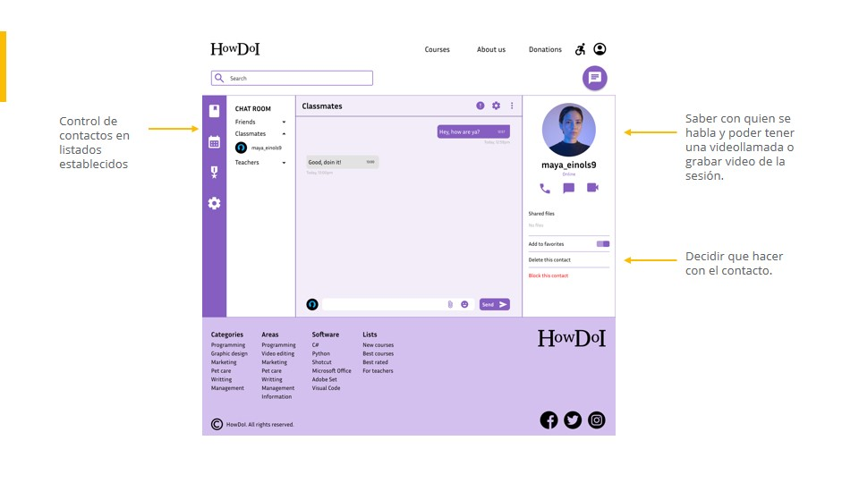
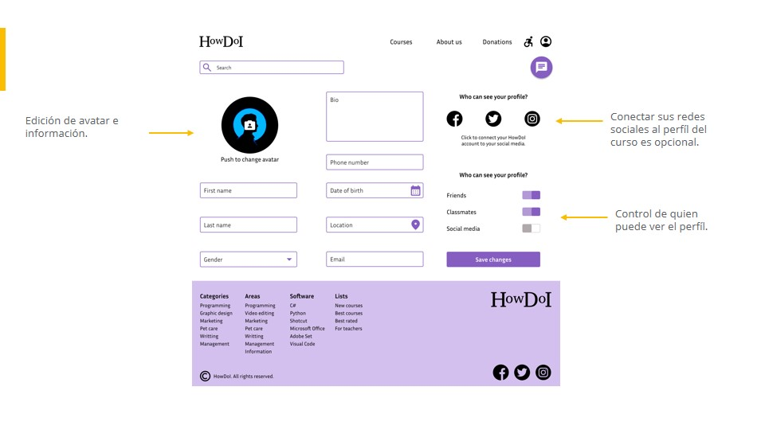
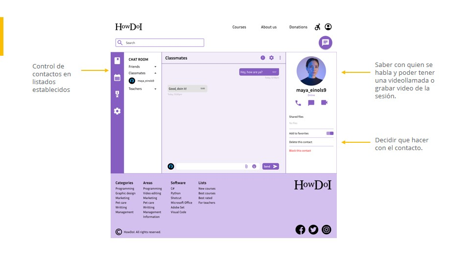
DESARROLLO: NAVEGACIÓN
Versión para móviles

Versión para tabletas

Versión para escritorio

Reflexiones
Este fue un proceso largo pero muy educativo, el desarrollo de herramientas para ayudar al público es una experiencia interensante ya que se exploran las necesidades que se presentan, las cuales son muchas y algunas requieren más que una persona trabajando en ellas, es deber del diseñador proveer la ayuda que pueda como pueda, no sentirse sofocado por lo que no se pudo concretar, el dar un apoyo así sea menor a una causa social siempre es satisfactorio y un proceso de aprendizaje importante.